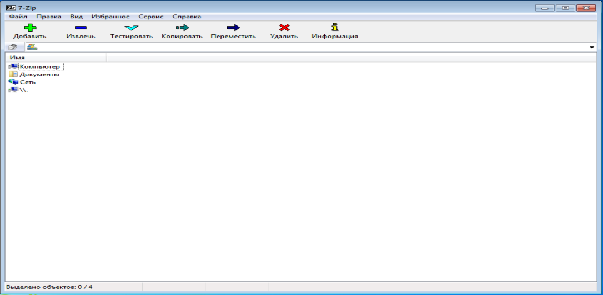
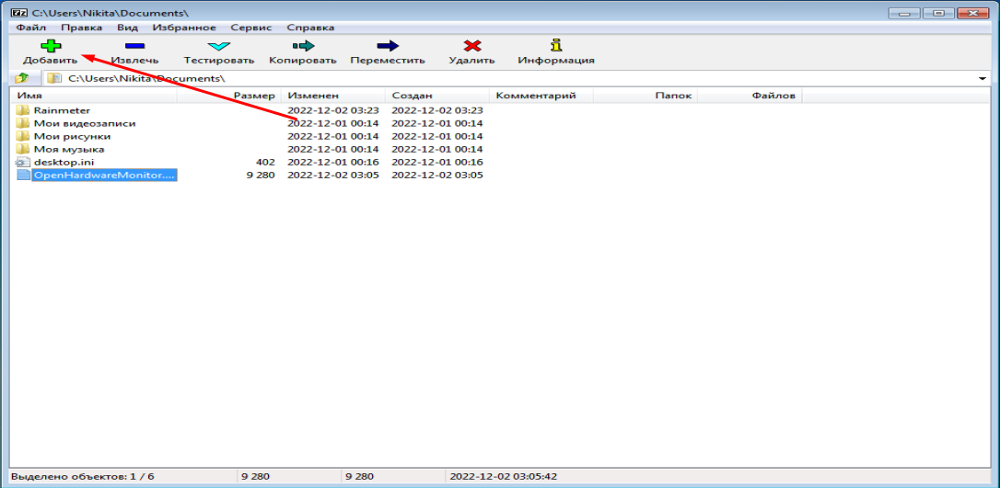
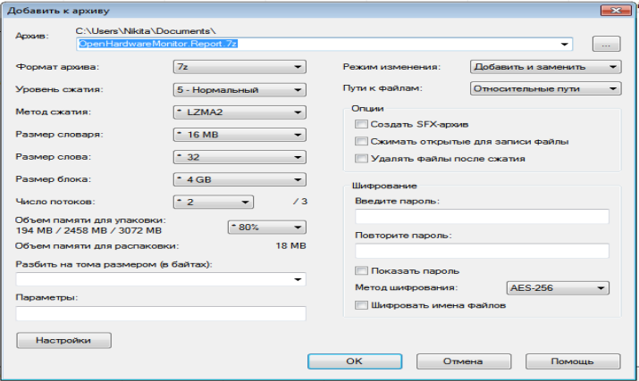
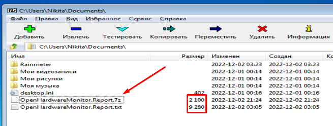
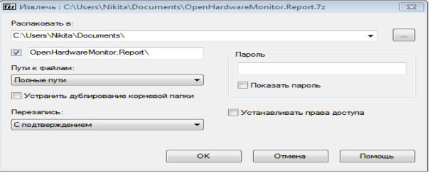
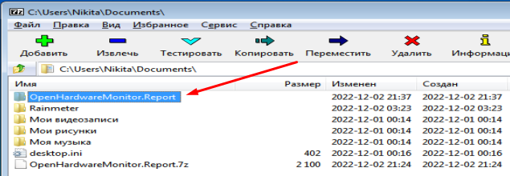
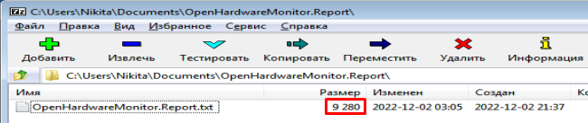

7-Zip – свободный файловый архиватор, предназначенный для сжатия данных. Данное приложение поддерживает несколько алгоритмов сжатия и множество форматов. Архиватор имеет собственный формат 7z с высокоэффективным алгоритмом сжатия LZMA. Разработчиком данной утилиты являлся Павлов Игорь Викторович.
Инсталляция не представляет собой ничего сложного – скачайте программу и запустите установщик. Следуйте простым инструкциям и дождитесь завершения процесса. После установки и открытия данного приложения вы увидите следующее окно:

Рисунок 5.1.1 – главное окно приложения 7-Zip.
Как мы можем увидеть, имеется основная панель инструментов, содержащая наиболее полезные функции и другие меню, позволяющие копать глубже и привыкать к пользовательскому интерфейсу.
7-Zip может интегрироваться с меню проводника Windows, в котором файлы архива отображаются в виде папок. В то же время он предоставляет панель инструментов с функцией перетаскивания. Также можно переключаться между однопанельным или даже двухпанельным режимом просмотра.
Рассмотрим основной функционал. Главная задача архиватора – сжатие файлов, достижение максимальной компрессии. Найдём любой файл и нажмём на кнопку добавить главной панели инструментов.

Рисунок 5.1.2 – добавление файла в архив.
Появится следующее меню.

Рисунок 5.1.3 – меню добавления файла в архив.
В данном меню можно провести множество настроек. Формат архива достаточно широк, имеются следующие форматы: 7z, bzip2, gzip, tar, wim, xz, zip. Далее можно поменять метод сжатия, по умолчанию стоит LZMA2, который является самым совершенным, но также имеются другие методы, такие как: LZMA, PPMd, BZip2. Можно увидеть метод сжатия, от смены которого либо уменьшается размер файла, но он дольше будет формироваться или же наоборот, будет наибольший размер файла при быстрой архивации. Также имеется возможность изменения размера словаря, размера слова, размера блока и числа потоков. Число потоков не стоит увеличивать сильно, так как архиватор может привести компьютер к фактическому зависанию. Можно разбить файл на тома с определённым размером. Важной частью я бы отметил возможность защиты архива от просмотра. После проведённых настроек, мы жмём кнопку «Ок» и получаем файл с расширением .7z.

Рисунок 5.1.4 – результат сжатия файла.
Важно отметить, что размер файла уменьшился почти в 5 раз, что существенно экономит память компьютера.
Через кнопку тестировать можно просмотреть результат о сжатие файла, можно увидеть исходный размер файла, сжатый, сколько файлов сжималось и сколько архивов получилось, а также отчёт об ошибках.
Кнопки «Копировать», «Переместить», «Удалить» и «Информация» аналогичны функционалу «Копировать», «Вырезать», «Удалить» и «Свойства», встроенных в Windows возможностей.
Рассмотрим функционал кнопки «Извлечь». После нажатия на неё появится следующее меню.

Рисунок 5.1.5 – меню после нажатия кнопки «Извлечь».
В целом тут нет важных настроек, всё можно оставить по умолчанию. Если же на архиве имеется пароль, то в строчку «Пароль» необходимо его заполнить и нажать кнопку «Ок». После чего будет создана папка, которая содержит все файлы, которые находились в архиве.

Рисунок 5.1.6 – результат извлечения файла.

Рисунок 5.1.7 – извлечённый файл.
Как можем увидеть, файл принял прежний размер, как и до сжатия.
Также функционала добавляет верхняя панель, где имеется «Файл», «Правка», «Вид», «Избранное», «Сервис» и «Справка», которые повторяют встроенный в Windows функционал и не требуются в разъяснении.
В заключении, отмечу, что 7-Zip – прекрасное приложении для архивации, использующее передовые технологии, а также имеющий свой формат и собственный метод сжатия за счёт чего достигается минимальный размер файла. Данное программное обеспечение я бы посоветовал всем пользователям.